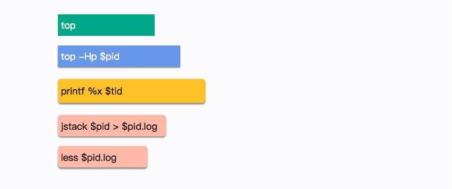

12 第 11 讲：动手实践：遇到问题不要慌，轻松搞定内存泄漏¶
当一个系统在发生 OOM 的时候，行为可能会让你感到非常困惑。因为 JVM 是运行在操作系统之上的，操作系统的一些限制，会严重影响 JVM 的行为。故障排查是一个综合性的技术问题，在日常工作中要增加自己的知识广度。多总结、多思考、多记录，这才是正确的晋级方式。
现在的互联网服务，一般都做了负载均衡。如果一个实例发生了问题，不要着急去重启。万能的重启会暂时缓解问题，但如果不保留现场，可能就错失了解决问题的根本，担心的事情还会到来。
所以，当实例发生问题的时候，第一步是隔离，第二步才是问题排查。什么叫隔离呢？就是把你的这台机器从请求列表里摘除，比如把 nginx 相关的权重设成零。在微服务中，也有相应的隔离机制，这里默认你已经有了（面试也默认你已经有隔离功能了）。
本课时的内容将涉及非常多的 Linux 命令，对 JVM 故障排查的帮助非常大，你可以逐个击破。
1. GC 引起 CPU 飙升¶
我们有个线上应用，单节点在运行一段时间后，CPU 的使用会飙升，一旦飙升，一般怀疑某个业务逻辑的计算量太大，或者是触发了死循环（比如著名的 HashMap 高并发引起的死循环），但排查到最后其实是 GC 的问题。
在 Linux 上，分析哪个线程引起的 CPU 问题，通常有一个固定的步骤。我们下面来分解这个过程，这是面试频率极高的一个问题。 - （1）使用 top 命令，查找到使用 CPU 最多的某个进程，记录它的 pid。使用 Shift + P 快捷键可以按 CPU 的使用率进行排序。
{kind=link}
（2）再次使用 top 命令，加 -H 参数，查看某个进程中使用 CPU 最多的某个线程，记录线程的 ID。
printf %x $tid
jstack \(pid >\)pid.log
less $pid.log
我们在 jstack 日志中找到了 CPU 使用最多的几个线程。

可以看到问题发生的根源，是我们的堆已经满了，但是又没有发生 OOM，于是 GC 进程就一直在那里回收，回收的效果又非常一般，造成 CPU 升高应用假死。
接下来的具体问题排查，就需要把内存 dump 一份下来，使用 MAT 等工具分析具体原因了（将在第 12 课时讲解）。
## 2. 现场保留
可以看到这个过程是繁杂而冗长的，需要记忆很多内容。现场保留可以使用自动化方式将必要的信息保存下来，那一般在线上系统会保留哪些信息呢？下面我进行一下总结。
### 2.1. 瞬时态和历史态
为了协助我们的分析，这里创造了两个名词： **瞬时态和历史态**。瞬时态是指当时发生的、快照类型的元素；历史态是指按照频率抓取的，有固定监控项的资源变动图。
有很多信息，比如 CPU、系统内存等，瞬时态的价值就不如历史态来的直观一些。因为瞬时状态无法体现一个趋势性问题（比如斜率、求导等），而这些信息的获取一般依靠监控系统的协作。
但对于 lsof、heap 等，这种没有时间序列概念的混杂信息，体积都比较大，无法进入监控系统产生有用价值，就只能通过瞬时态进行分析。在这种情况下，瞬时态的价值反而更大一些。我们常见的堆快照，就属于瞬时状态。
问题不是凭空产生的，在分析时，一般要收集系统的整体变更集合，比如代码变更、网络变更，甚至数据量的变化。

接下来对每一项资源的获取方式进行介绍。
### 2.2. 保留信息
（1）系统当前网络连接
ss -antp > $DUMP_DIR/ss.dump 2>&1
其中，ss 命令将系统的所有网络连接输出到 ss.dump 文件中。使用 ss 命令而不是 netstat 的原因，是因为 netstat 在网络连接非常多的情况下，执行非常缓慢。
后续的处理，可通过查看各种网络连接状态的梳理，来排查 TIME_WAIT 或者 CLOSE_WAIT，或者其他连接过高的问题，非常有用。
线上有个系统更新之后，监控到 CLOSE_WAIT 的状态突增，最后整个 JVM 都无法响应。CLOSE_WAIT 状态的产生一般都是代码问题，使用 jstack 最终定位到是因为 HttpClient 的不当使用而引起的，多个连接不完全主动关闭。
（2）网络状态统计
netstat -s > $DUMP_DIR/netstat-s.dump 2>&1
sar -n DEV 1 2 > $DUMP_DIR/sar-traffic.dump 2>&1
上面这个命令，会使用 sar 输出当前的网络流量。在一些速度非常高的模块上，比如 Redis、Kafka，就经常发生跑满网卡的情况。如果你的 Java 程序和它们在一起运行，资源则会被挤占，表现形式就是网络通信非常缓慢。
（3）进程资源
lsof -p $PID > \(DUMP_DIR/lsof-\)PID.dump
这是个非常强大的命令，通过查看进程，能看到打开了哪些文件，这是一个神器，可以以进程的维度来查看整个资源的使用情况，包括每条网络连接、每个打开的文件句柄。同时，也可以很容易的看到连接到了哪些服务器、使用了哪些资源。这个命令在资源非常多的情况下，输出稍慢，请耐心等待。
（4）CPU 资源
mpstat > $DUMP_DIR/mpstat.dump 2>&1 vmstat 1 3 > $DUMP_DIR/vmstat.dump 2>&1 sar -p ALL > $DUMP_DIR/sar-cpu.dump 2>&1 uptime > $DUMP_DIR/uptime.dump 2>&1
iostat -x > $DUMP_DIR/iostat.dump 2>&1
一般，以计算为主的服务节点，I/O 资源会比较正常，但有时也会发生问题，比如日志输出过多，或者磁盘问题等。此命令可以输出每块磁盘的基本性能信息，用来排查 I/O 问题。在第 8 课时介绍的 GC 日志分磁盘问题，就可以使用这个命令去发现。
（6）内存问题
free -h > $DUMP_DIR/free.dump 2>&1
ps -ef > $DUMP_DIR/ps.dump 2>&1 dmesg > $DUMP_DIR/dmesg.dump 2>&1 sysctl -a > $DUMP_DIR/sysctl.dump 2>&1
dmesg 是许多静悄悄死掉的服务留下的最后一点线索。当然，ps 作为执行频率最高的一个命令，它当时的输出信息，也必然有一些可以参考的价值。
另外，由于内核的配置参数，会对系统和 JVM 产生影响，所以我们也输出了一份。
（8）进程快照，最后的遗言（jinfo）
${JDK_BIN}jinfo $PID > $DUMP_DIR/jinfo.dump 2>&1
${JDK_BIN}jstat -gcutil $PID > $DUMP_DIR/jstat-gcutil.dump 2>&1 ${JDK_BIN}jstat -gccapacity $PID > $DUMP_DIR/jstat-gccapacity.dump 2>&1
${JDK_BIN}jmap $PID > $DUMP_DIR/jmap.dump 2>&1 ${JDK_BIN}jmap -heap $PID > $DUMP_DIR/jmap-heap.dump 2>&1 ${JDK_BIN}jmap -histo $PID > $DUMP_DIR/jmap-histo.dump 2>&1 \({JDK_BIN}jmap -dump:format=b,file=\)DUMP_DIR/heap.bin $PID > /dev/null 2>&1
jmap 将会得到当前 Java 进程的 dump 信息。如上所示，其实最有用的就是第 4 个命令，但是前面三个能够让你初步对系统概况进行大体判断。
因为，第 4 个命令产生的文件，一般都非常的大。而且，需要下载下来，导入 MAT 这样的工具进行深入分析，才能获取结果。这是分析内存泄漏一个必经的过程。
（11）JVM 执行栈
${JDK_BIN}jstack $PID > $DUMP_DIR/jstack.dump 2>&1
top -Hp $PID -b -n 1 -c > \(DUMP_DIR/top-\)PID.dump 2>&1
kill -3 $PID
有时候，jstack 并不能够运行，有很多原因，比如 Java 进程几乎不响应了等之类的情况。我们会尝试向进程发送 kill -3 信号，这个信号将会打印 jstack 的 trace 信息到日志文件中，是 jstack 的一个替补方案。
gcore -o $DUMP_DIR/core $PID
${JDK_BIN}jhsdb jmap --exe ${JDK}java --core $DUMP_DIR/core --binaryheap
jhsdb jmap --heap --pid 37340 jhsdb jmap --pid 37288 jhsdb jmap --histo --pid 37340 jhsdb jmap --binaryheap --pid 37340
heap 参数能够帮我们看到大体的内存布局，以及每一个年代中的内存使用情况。这和我们前面介绍的内存布局，以及在 VisualVM 中看到的 没有什么不同。但由于它是命令行，所以使用更加广泛。

histo 能够大概的看到系统中每一种类型占用的空间大小，用于初步判断问题。比如某个对象 instances 数量很小，但占用的空间很大，这就说明存在大对象。但它也只能看大概的问题，要找到具体原因，还是要 dump 出当前 live 的对象。

一般内存溢出，表现形式就是 Old 区的占用持续上升，即使经过了多轮 GC 也没有明显改善。我们在前面提到了 GC Roots，内存泄漏的根本就是，有些对象并没有切断和 GC Roots 的关系，可通过一些工具，能够看到它们的联系。
## 4. 一个卡顿实例
有一个关于服务的某个实例，经常发生服务卡顿。由于服务的并发量是比较高的，所以表现也非常明显。这个服务和我们第 8 课时的高并发服务类似，每多停顿 1 秒钟，几万用户的请求就会感到延迟。
我们统计、类比了此服务其他实例的 CPU、内存、网络、I/O 资源，区别并不是很大，所以一度怀疑是机器硬件的问题。
接下来我们对比了节点的 GC 日志，发现无论是 Minor GC，还是 Major GC，这个节点所花费的时间，都比其他实例长得多。
通过仔细观察，我们发现在 GC 发生的时候，vmstat 的 si、so 飙升的非常严重，这和其他实例有着明显的不同。
使用 free 命令再次确认，发现 SWAP 分区，使用的比例非常高，引起的具体原因是什么呢？
更详细的操作系统内存分布，从 /proc/meminfo 文件中可以看到具体的逻辑内存块大小，有多达 40 项的内存信息，这些信息都可以通过遍历 /proc 目录的一些文件获取。我们注意到 slabtop 命令显示的有一些异常，dentry（目录高速缓冲）占用非常高。
问题最终定位到是由于某个运维工程师执行了一句命令：
find / | grep "x"
他是想找一个叫做 x 的文件，看看在哪台服务器上，结果，这些老服务器由于文件太多，扫描后这些文件信息都缓存到了 slab 区上。而服务器开了 swap，操作系统发现物理内存占满后，并没有立即释放 cache，导致每次 GC 都要和硬盘打一次交道。
解决方式就是关闭 SWAP 分区。
## **swap** **是很多性能场景的万恶之源，建议禁用**。当你的应用真正高并发了，SWAP 绝对能让你体验到它魔鬼性的一面： **进程倒是死不了了，但** **GC** **时间长的却让人无法忍受。** 5. 内存泄漏

我们再来聊一下内存溢出和内存泄漏的区别。**内存溢出是一个结果，而内存泄漏是一个原因**。内存溢出的原因有内存空间不足、配置错误等因素。
不再被使用的对象、没有被回收、没有及时切断与 GC Roots 的联系，这就是内存泄漏。内存泄漏是一些错误的编程方式，或者过多的无用对象创建引起的。
举个例子，有团队使用了 HashMap 做缓存，但是并没有设置超时时间或者 LRU 策略，造成了放入 Map 对象的数据越来越多，而产生了内存泄漏。
再来看一个经常发生的内存泄漏的例子，也是由于 HashMap 产生的。代码如下，由于没有重写 Key 类的 hashCode 和 equals 方法，造成了放入 HashMap 的所有对象都无法被取出来，它们和外界 **失联了**。所以下面的代码结果是 null。
//leak example
import java.util.HashMap;
import java.util.Map;
public class HashMapLeakDemo {
public static class Key {
String title;
public Key(String title) {
this.title = title;
}
}
public static void main(String[] args) {
Map
即使提供了 equals 方法和 hashCode 方法，也要非常小心，尽量避免使用自定义的对象作为 Key。仓库中 dog 目录有一个实际的、有问题的例子，你可以尝试排查一下。
再看一个例子，关于文件处理器的应用，在读取或者写入一些文件之后，由于发生了一些异常，close 方法又没有放在 finally 块里面，造成了文件句柄的泄漏。由于文件处理十分频繁，产生了严重的内存泄漏问题。
另外，对 Java API 的一些不当使用，也会造成内存泄漏。很多同学喜欢使用 String 的 intern 方法，但如果字符串本身是一个非常长的字符串，而且创建之后不再被使用，则会造成内存泄漏。
import java.util.UUID; public class InternDemo { static String getLongStr() { StringBuilder sb = new StringBuilder(); for (int i = 0; i < 100000; i++) { sb.append(UUID.randomUUID().toString()); } return sb.toString(); } public static void main(String[] args) { while (true) { getLongStr().intern(); } } }
```
6. 小结¶
{kind=link}
本课时介绍了很多 Linux 命令，用于定位分析问题，所有的命令都是可以实际操作的，能够让你详细地把握整个 JVM 乃至操作系统的运行状况。其中，jinfo、jstat、jstack、jhsdb（jmap）等是经常被使用的一些工具，尤其是 jmap，在分析处理内存泄漏问题的时候，是必须的。
同时还介绍了保留现场的工具和辅助分析的方法论，遇到问题不要慌，记得隔离保存现场。
接下来我们看了一个实际的例子，由于 SWAP 的启用造成的服务卡顿。SWAP 会引起很多问题，在高并发服务中一般是关掉它。从这个例子中也可以看到，影响 GC，甚至是整个 JVM 行为的因素，可能不仅限于 JVM 内部，故障排查也是一个综合性的技能。
最后，我们详细看了下内存泄漏的概念和几个实际的例子，从例子中能明显的看到内存泄漏的结果，但是反向去找这些问题代码就不是那么容易了。在后面的课时内容中，我们将使用 MAT 工具具体分析这个捉虫的过程。